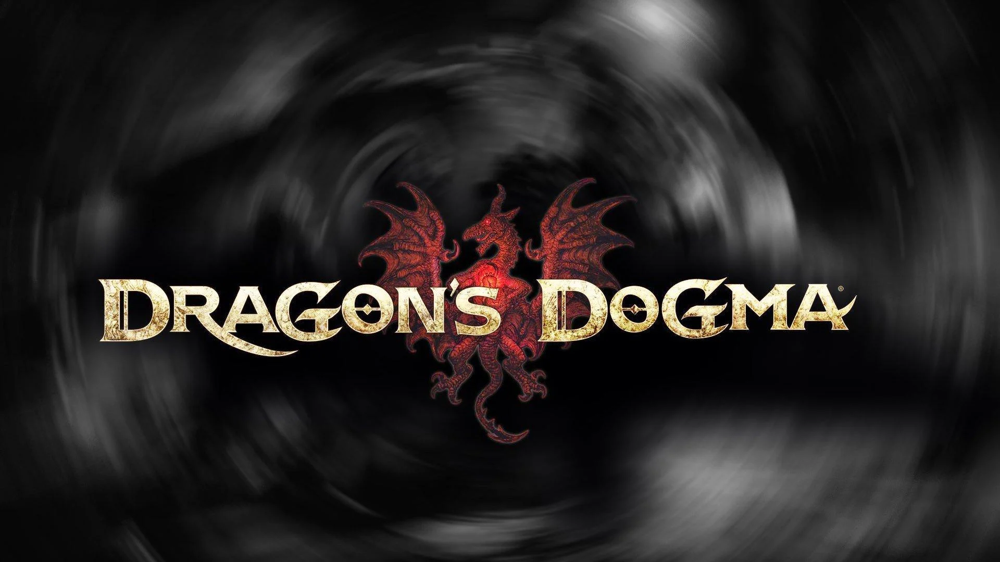

Ghost
en resident evil 4, al agente especial Leon S. Kennedy se le asigna la misión de rescatar a la hija del presidente de los EUA, que ha sido secuestrada.
Tras llegar a una aldea rural europea, se enfrenta a nuevas amenazas que suponen retos totalmente diferentes de los clásicos enemigos zombis de pesados movimientos de las primeras entregas de esta serie.
Leon lucha contra terroríficas criaturas nuevas infestadas con una nueva amenaza denominada «Las Plagas» y se enfrenta a una agresiva horda de enemigos que incluye aldeanos bajo control mental conectados a Los Iluminados, la misteriosa secta detrás del rapto.

Desarrollado en un mundo abierto de gran extensión, Dragon’s Dogma: Dark Arisen ofrece una gratificante experiencia de combate.
Los jugadores se embarcan hacia una épica aventura en un fabuloso mundo lleno de vida junto a tres compañeros controlados por la IA y conocidos como “peones”.
Estos luchan de forma independiente, demostrando habilidades y aptitudes que han desarrollado basándose en rasgos aprendidos del jugador. Los usuarios de la versión para PC pueden compartir estos peones en línea y acabar con terroríficos enemigos para hacerse con recompensas en forma de tesoros, trucos y consejos de estrategia.< Los peones también te serán de utilidad cuando necesites habilidades determinadas para completar variados y exigentes retos.